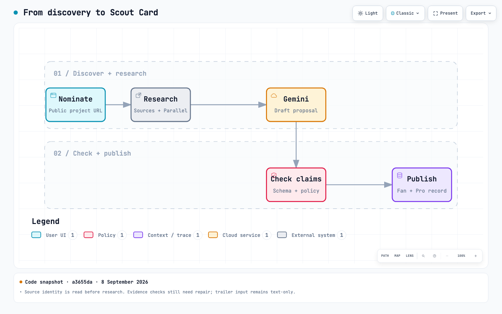
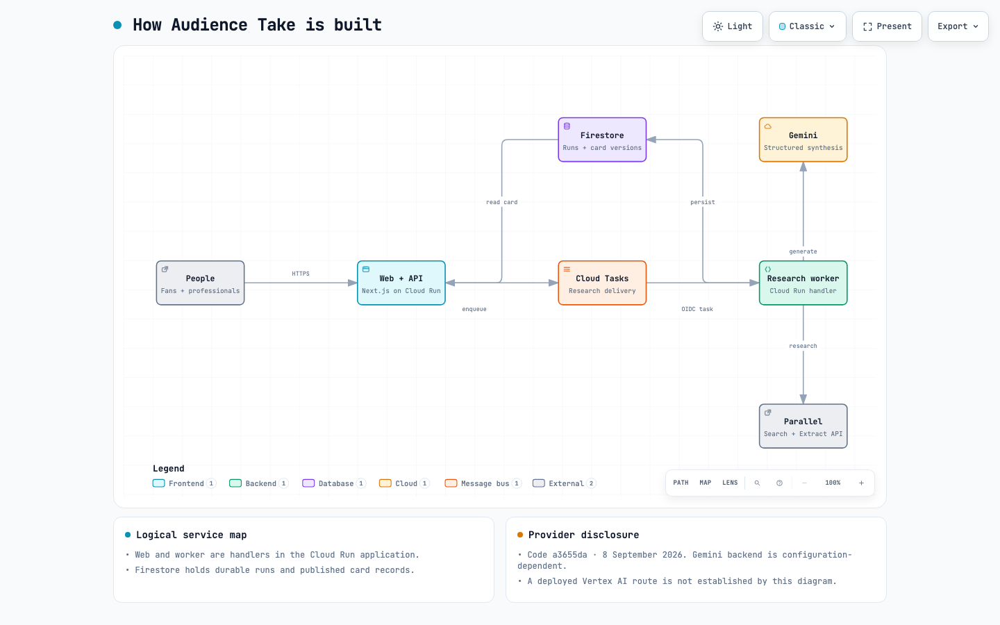
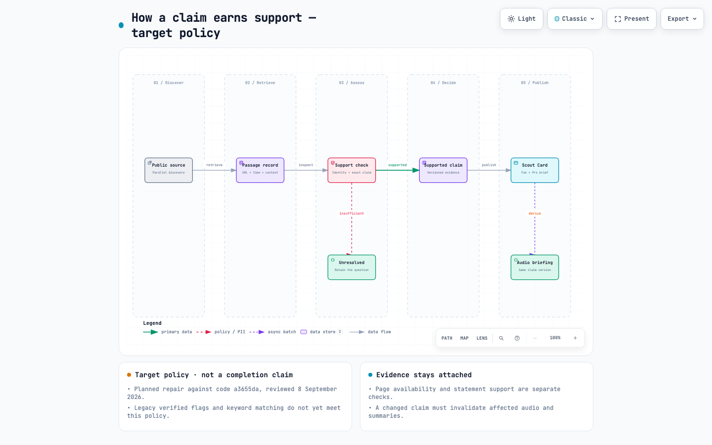

AUDIENCE TAKE / INSIDE THE SYSTEM
How discovery becomes context.
Explore the agent workflow, the connected services and the evidence policy. Each diagram includes an interactive viewer with light and dark themes.
01 / Current workflow

From discovery to Scout Card
Follow a public nomination through source research, Gemini synthesis, validation and publication.
Explore diagram →02 / Current service map
How Audience Take is built
See how the web application, Cloud Tasks, research worker, Firestore, Gemini and Parallel connect.
Explore diagram →03 / Target policy
How a claim earns support
Explore the planned passage checks and the boundary between supported findings and unresolved questions.
Explore diagram →